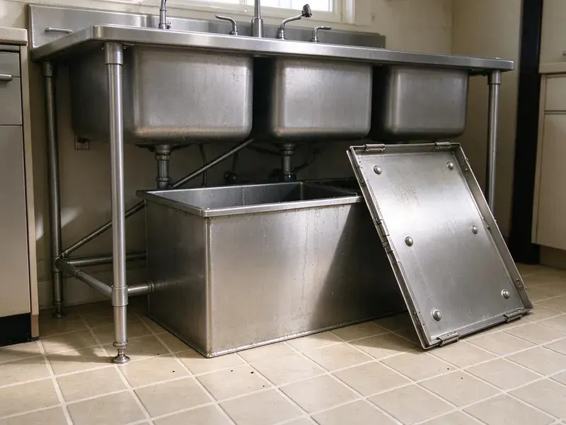

Insinkerator Installation in Fairbanks, AK
From quick swaps to first-time disposal installs, our Fairbanks, AK plumbers set up InSinkErator units that run quietly and drain freely.
- Old Unit Haul-Away Included
- Upfront pricing
- Experienced Plumbers
- Prompt, reliable service

Ready for a New Insinkerator in Fairbanks, AK?
Reach out today to schedule your installation and enjoy a cleaner, more convenient kitchen.
Expert Insinkerator Installation for Kitchens in Fairbanks, AK
At CKN Plumbing, we understand the importance of a properly installed Insinkerator for a functional kitchen in Fairbanks, AK. Our licensed plumbers ensure every installation meets local codes and manufacturer specifications, giving you peace of mind and a system that lasts.
Our expertise includes:
- Dishwasher drain knockout removal and air gap connection
- Hardwired, plug-in and switch-mounted air button setups
- Precise electrical and plumbing connections

Additional Kitchen Plumbing Services in Fairbanks, AK
Our kitchen plumbing services in Fairbanks, AK cover sinks, disposals, dishwashers, and grease traps so your kitchen stays clean, safe, and fully functional.


Customers
Why Choose CKN Plumbing for Insinkerator Installation in Fairbanks, AK?
Choosing CKN Plumbing for your Insinkerator installation means choosing reliability and professionalism. We focus on careful execution to prevent future issues and ensure your unit performs as expected.
- Reliable Function, We test every new Insinkerator carefully to confirm proper operation, grind efficiency, and leak-free performance.
- Local Expertise, Our plumbers are familiar with Fairbanks, AK plumbing codes and typical home layouts, ensuring compliant and efficient installations.
- Customer Satisfaction, Your satisfaction is our priority, and we stand by our work with solid guarantees and responsive service.
Citywide Coverage
From downtown to the outer edges of Fairbanks, we provide comprehensive Insinkerator installation services. Our local knowledge means we understand the plumbing needs of homes across the whole area.
Experienced Team
Our plumbers have installed hundreds of InSinkErator units and know the quirks of each mount design. They can swap a Badger 5 in under an hour and handle tight cabinets without damaging your sink.
Safety-First Approach
We put a priority on safety and code compliance for all Insinkerator installations. Our process provides secure wiring, proper grounding, and leak-proof connections, giving you a reliable and safe appliance.
Trusted Certified Fairbanks Plumbing Services Professionals
At CKN Plumbing, we take pride in providing licensed, certified plumbing services throughout Fairbanks, AK. Backed by leading industry credentials, our experienced plumbers combine technical skill with genuine customer care. Whether it is repair, installation, or maintenance, we follow strict safety and quality standards to deliver lasting results you can trust.
Call Us Now PHCC Plumbing Contractor Recognition
PHCC Plumbing Contractor Recognition Better Business Bureau (BBB) Accreditation
Better Business Bureau (BBB) Accreditation Angi Certified Pro
Angi Certified Pro ISO 9001 Quality Management Certification
ISO 9001 Quality Management CertificationReliable Insinkerator Installation Services in Fairbanks, AK
Advanced Insinkerator Evolution Series Installation in Fairbanks, AK
For quieter operation and enhanced grinding power, the Insinkerator Evolution series is an excellent upgrade for homes in Fairbanks, AK. These models often require specific wiring and plumbing considerations due to their larger size and advanced features. Our plumbers are experienced with all Evolution series disposals, ensuring all sound insulation and grinding components are perfectly aligned. We carefully check for vibration, noise, and flow rates to confirm optimal performance in your kitchen.

Disposal Replacement and Haul-Away in Fairbanks, AK
When an old disposal hums, leaks from the bottom or trips the reset button constantly, replacement is usually smarter than repair. We remove the failed unit, clean the old putty off the sink and install a new InSinkErator in its place. If your old mount is an InSinkErator quick-lock, we can often reuse it to save time. We haul the old unit away so you are not stuck getting rid of it. Most replacements finish in a single visit.
Insinkerator Badger Series Installation in Fairbanks, AK
The Insinkerator Badger series is a popular, reliable choice for many Fairbanks, AK homeowners. We specialize in installing all Badger models, from the Badger 1 to the Badger 5. Our service ensures these units are correctly mounted, wired, and connected to your drain system. We pay close attention to the individual requirements of each Badger model, delivering efficient performance and preventing common issues like leaks or loose connections.
Standard Insinkerator Badger Series Installation in Fairbanks
The Insinkerator Badger series is a popular choice for many Fairbanks homeowners due to its reliability and low price. Our service includes careful removal of your old unit, accurate mounting of the new Badger model, secure electrical hookup, and connection to your existing drain lines. We create a watertight seal at the sink flange and test the unit thoroughly for proper function, making sure it grinds efficiently and drains correctly before we head out of your Fairbanks home.
New Construction Insinkerator Installation in Fairbanks
For new home builds or major kitchen remodels in Fairbanks, we provide comprehensive Insinkerator installation from scratch. This service involves installing the necessary plumbing and electrical rough-ins, then fitting the Insinkerator unit once the cabinetry and sink are in place. We coordinate with other contractors to ensure a seamless integration into your new kitchen design, adhering to all local building codes for a clean finish.
Commercial Insinkerator Installation in Fairbanks, AK
Beyond residential services, CKN Plumbing also offers commercial Insinkerator installation for businesses in Fairbanks, AK. Commercial-grade disposals are built for heavier use and require specialized plumbing and electrical setups. We install heavy-duty units designed to handle the demands of restaurants, cafes, and other food service establishments, ensuring compliance with commercial plumbing codes and minimizing disruption to your operations.
Dishwasher Connection and Air Gap Setup in Fairbanks
Most InSinkErator units have a dishwasher inlet with a factory knockout plug inside. We knock that plug out, clear the debris and connect the dishwasher drain hose with a proper clamp. We then install or verify an air gap or high loop so dirty sink water cannot siphon back into the dishwasher. Forgetting the knockout is one of the most common DIY mistakes and leads to a dishwasher that will not drain. We test both appliances together before we leave.

Evolution Series Upgrades in Fairbanks, AK
Evolution models like the Compact, Septic Assist and Excel use multi-stage grinding and extra sound insulation. They break down fibrous foods such as celery and corn husks that can jam lighter units. We install Evolution disposals for families who cook often and want a quieter kitchen. Because these units are taller and heavier, we check cabinet clearance and trap height before we mount them. The result is a smoother grind and fewer clogs down the line.
Insinkerator Installation Near Me in Fairbanks, AK
Looking for 'Insinkerator installation near me' in Fairbanks, AK? CKN Plumbing is your local solution. Our team of licensed plumbers is strategically located to respond quickly to your service requests, providing prompt and efficient installation of your new garbage disposal. We pride ourselves on being a trusted part of the local community.
When you need an InSinkErator installed quickly, our local plumbers can be at your door fast. We stock popular Badger and Evolution models so you do not have to wait for a special order. Most installs are finished the same day you call.
CKN Plumbing at a Glance
- Licensed and insured plumbers serving Fairbanks, AK
- 24/7 emergency service with same-day scheduling
- Upfront, flat-rate pricing before work begins
- 4.9-star rated by 309+ Alaska customers
Fairbanks Map
Fairbanks Information
- Population
- 31,856
- Area codes
- Local
- Service area
- Fairbanks and communities within 40 miles
- Nearby
- College, Badger, Steele Creek, Chena Ridge
Proper Insinkerator installation is especially important in Fairbanks, AK homes to handle food waste well and prevent clogs in the drain system. Frost heave is a major concern in Alaska, as freezing ground can lift and shift foundations, buried lines, and septic components.
Expert Services
Trust our professionals for reliable CKN Plumbing solutions in Fairbanks, AK.
Our Specialized Plumbing Services in Fairbanks, AK
At CKN Plumbing, we provide a complete range of plumbing services across Fairbanks, AK. From leak detection to full system installations, our team ensures fast, precise, and affordable service for both residential and commercial properties. Explore our core services below:


How Our Insinkerator Installation Process Works in Fairbanks, AK
Our Insinkerator installation process in Fairbanks, AK is designed to be simple and efficient, minimizing disruption to your home.
Request a Quote
Call (928) 470-9007 and tell us about your sink and current disposal, if any. We will recommend a model and give you a clear price before we arrive.
Mount and Connect
Our plumber removes the old unit, installs the new sink flange and mount, and connects the drain and dishwasher lines. We also make the electrical connection with a cord kit or hardwire.
Test and Clean Up
We run water, grind a test load and check every joint for leaks. Then we clean the cabinet, haul away the old unit and show you how to use the reset button and hex key.
Frequently Asked Questions About Insinkerator Installation in Fairbanks
Most InSinkErator replacements cost between $300 and $800 installed, depending on the model. A Badger 5 sits at the lower end, while Evolution Excel installs land at the higher end. First-time installs that need a new outlet or flange work can run more.
For light use, a Badger 5 or Badger 5XP works well. Families who cook a lot or want a quieter unit should consider an Evolution Compact or Excel. Homes on septic should consider the Evolution Septic Assist.
CKN Plumbing provides a warranty on all our labor for Insinkerator installations, usually covering the work for a specified period. The Insinkerator unit itself will come with its manufacturer's warranty, which varies by model. We stand by the quality of our work.
To prepare for your Insinkerator installation, simply clear out the cabinet space under your kitchen sink. Remove any cleaning supplies, trash bins, or other items to give our plumber clear access to the area. If replacing an old unit, having a new Insinkerator model ready can also speed up the process.
InSinkErator offers in-home warranties that range from about 2 years on basic Badger models up to 10 years on premium Evolution units. We also back our installation labor with our own guarantee on workmanship.
A simple replacement generally does not need a permit. Adding a new electrical circuit or making significant drain changes may require one, and we will let you know if your job falls into that category.
Constant humming without grinding, leaks from the bottom of the unit, frequent tripping of the reset button and rusty water are all signs of failure. If the unit is more than 10 years old, replacement is often the better value.
Before our plumber arrives, please clear out the cabinet under your kitchen sink to provide clear access to the plumbing and electrical connections. If you have a new unit, have it ready. This helps us work quickly.
What People Are Saying About Our Plumbing Experts?

Sofia M.
Two new toilets installed in one visit, no mess left behind, and the tech even adjusted a faucet he noticed was dripping. Fair pricing and really friendly.
Toilet Installation · Fishhook, AK
Daniel K.
A pipe burst at 11 pm and they actually answered. The plumber showed up within the hour, shut everything down, and had us back to normal the next morning. Could not ask for more.
Emergency Plumbing · College, AK
Emily R.
I called CKN Plumbing for plumbing repair, and the technician was fast, polite, and thorough. They explained the problem clearly and fixed it the same day. I will definitely hire them again. Highly recommended!
Plumbing Repair · Badger, AK
James P.
Our commercial plumbing system had a leak under the sink, and CKN Plumbing handled it professionally. The plumbers arrived quickly and restored everything without disruption to our customers.
Commercial Plumbing · Fairbanks, AKRobert G.
The trenchless sewer replacement saved our front yard. They walked us through the camera inspection footage first so we knew exactly what we were paying for.
Sewer Line Replacement · Steele Creek, AK
Mark T.
When our office needed drain cleaning, CKN Plumbing provided quick, reliable service. The plumber arrived on time and made sure every drain flowed perfectly before leaving. Very satisfied.
Drain Cleaning · Fishhook, AK